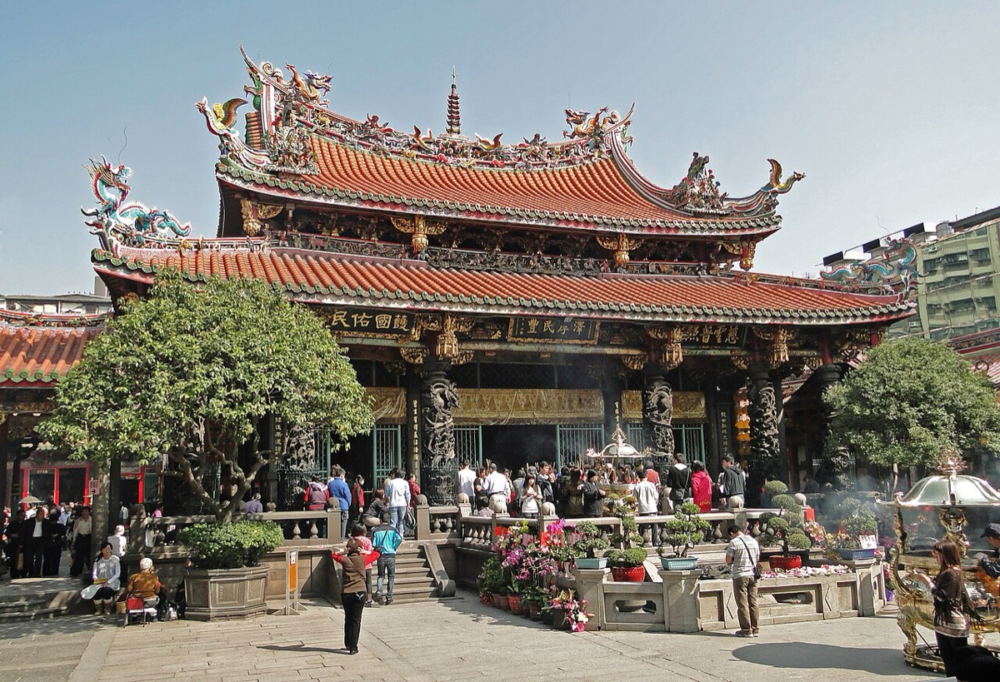
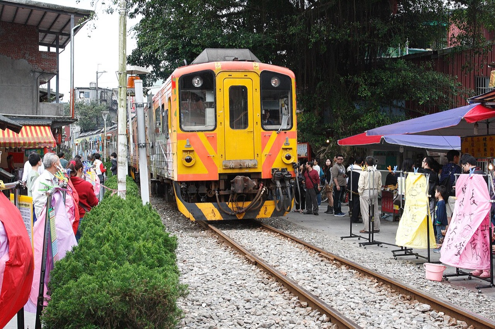
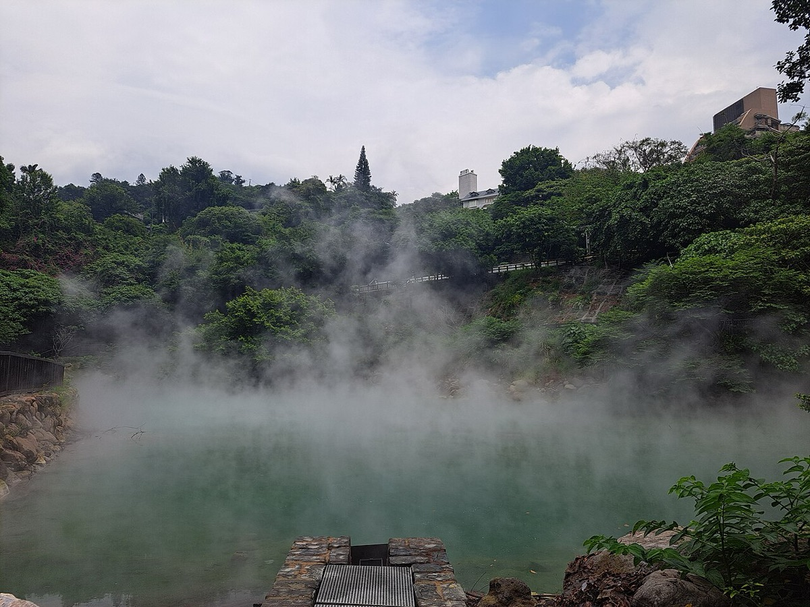

여행 전체 동선 · 완화구를 베이스로 두고 산간과 온천을 하루씩 끼워 넣는다
Day 1 · 해 지는 산에 올라
12월 20일 (금)
오전 비행기로 타오위안에 내려 완화구에 짐을 푼다. 해 지기 전에 샹산에 올라 타이베이 101을 마주 본다.
Day 1의 하루 곡선 · 도착하자마자 일몰을 쫓는다
FLIGHT
아시아나 인천 → 타오위안09:45 출발 · 11:40 도착
STAY
Caesar Metro Taipei용산사역 도보 5분
오늘의 미션
샹산 전망대 일몰일몰 17:05 · 두 번째 전망대가 베스트
공항 → 시내
타임라인
| 시간 | 일정 | 메모 |
|---|
| 09:45 | 아시아나 인천 → 타오위안 ✈ 2시간 55분 | 11:40 도착. 아시아나는 제2터미널. |
| 12:00 | 대만 입국 수속 | 자동심사대를 쓰려면 e-Gate 등록센터에서 여권 제시 후 사진과 지문을 등록해야 한다. 온라인 입국신고서는 사전 작성. |
| 12:30 | 이지카드·유심 수령 잊지 말 것 | 입국장 우측 유나이트 트래블러 카운터. 유심 수령 시 여권사진 크기 촬영이 필요하다. 공항 MRT 실물 티켓은 지하 2층 Ezfly 카운터. |
| 12:40 | 여행지원금 추첨 선택 | 수하물 찾고 도착홀 우측 Event Area. QR 인식 후 추첨, 당첨되면 5,000NTD를 현장에서 받는다. |
| 13:20 | 공항선 급행으로 타이베이역 33분 | 객차와 승강장에서는 물도 못 마신다. 벌금 NT$1,500~7,500. |
| 오후 | 완화역 → 숙소 체크인 7분 | 15시부터 체크인. 정류장 바로 앞. |
| 16:00 | 샹산역으로 이동 35분 | 완화 → 타이베이역 → 타이베이 메인역 → 샹산역. 일몰에 늦지 않으려면 이때는 출발해야 한다. |
| 17:05 | 샹산 전망대 일몰 오늘의 미션 | 역에서 도보 16분. 두 번째 전망대가 타이베이 101이 가장 가깝게 보이는 자리다. 거기서 일몰을 보고 세 번째까지 찍고 내려오면 좋다. |
| 19:30 | 키키 레스토랑 식사 | att 4 fun. 대만식 사천요리로 식사 90분 제한. 계란두부튀김, 부추꽃볶음, 탄탄멘, 물만두, 마파두부. |
| 밤 | 샹티 애비뉴 플라자 야경 | 스노우 효과가 있는 크리스마스 트리. 타이베이시청까지 조명 거리가 이어진다. |
| 밤 | 숙소 복귀와 짐 챙기기 | 용산사역 건너편 멍지아 공원 쪽은 우범지역이니 밤에는 Exit 3 쪽으로. 내일은 캐리어를 호텔에 두고 작은 짐만 챙겨 신베이로 간다. |
DAY 1 체크포인트
- 대만 지하철은 취식이 법으로 금지입니다. 객차뿐 아니라 승강장에서도 물을 마시면 안 됩니다. 벌금이 NT$1,500부터라 무심코 하지 않도록 미리 익혀두세요.
- e-Gate 등록을 첫날 해두면 다음부터 자동심사대를 쓸 수 있습니다. 등록 자체는 금방 끝납니다.
- 샹산은 일몰 시간이 전부입니다. 역에서 전망대까지 16분을 올라야 하니, 일몰 40분 전에는 역에 도착해 있어야 합니다.
- 숙소가 용산사역인데 건너편 멍지아 공원 일대는 밤에 피하는 게 좋습니다. Exit 3 방향으로 다니세요.
Day 2 · 천등을 띄우고 산으로
12월 21일 (토)
폐광 마을로 들어간다. 스펀에서 천등을 날리고 폭포를 본 뒤, 밤에는 홍등이 켜진 지우펀에서 잔다.
Day 2의 하루 곡선 · 기차를 갈아타며 산속으로
MOVE
기차 두 번완화 → 루이팡 → 스펀 → 지우펀
STAY
Windsor's Sunlight Han-Guan지우펀 안쪽 · 통창 객실
오늘의 미션
천등 날리기스펀라오지에 철길 위에서
타이베이 → 스펀 → 지우펀
타임라인
| 시간 | 일정 | 메모 |
|---|
| 아침 | 간단히 식사 | 전날 사둔 편의점 음식. 숙소 근처 아만유반(6시 오픈)이나 곱창 굴국수도 후보였다. |
| 오전 | 완화역 → 허우통 1시간 12분 | 로컬 트레인, NT$60. 비가 오면 고양이가 나오지 않아 허우통을 건너뛰고 루이팡 경유로 스펀에 직행하는 것도 방법이다. |
| 오전 | 허우통 고양이 마을 선택 | 원래 타이베이 최대 규모의 탄광 마을이었다. 고양이를 만질 거면 물티슈와 손소독제를 챙길 것. |
| 낮 | 허우통 → 스펀 21분 | 로컬 트레인, NT$15. |
| 낮 | 스펀라오지에에서 천등 오늘의 미션 | 철길 위에서 소원을 적어 날린다. 가게마다 색깔별로 의미가 다르다. |
| 점심 | 닭날개 볶음밥과 흑돼지 소시지 식사 | 라오지에 길거리 음식. |
| 오후 | 스펀 폭포 공원 명소 | 도보 10분. 지룽강 위 쓰광탄 현수교를 건너면 공원으로 들어간다. |
| 저녁 | 지우펀으로 버스 | 스펀에서 징퉁까지 가는 평시선도 있다. 14:37 → 14:56. |
| 저녁 | 지우펀 길거리 음식 식사 | 우육면, 땅콩아이스크림, 버블티. |
| 밤 | 홍등 켜진 지우펀 거리 야경 | 당일치기 관광객이 빠진 뒤의 지우펀이 숙박의 이유다. |
DAY 2 체크포인트
- 지우펀에서 자는 게 이 일정의 핵심입니다. 당일치기로 오면 가장 붐비는 낮에만 보게 되는데, 묵으면 관광객이 빠진 저녁과 이른 아침을 볼 수 있습니다.
- 비가 오면 허우통은 건너뛰어도 됩니다. 고양이가 안 나오거든요. 실제로 그렇게 해서 스펀에 일찍 도착했더니 관광객이 훨씬 적어 더 좋았습니다.
- 캐리어는 타이베이 숙소에 두고 갑니다. 산간 지역이라 길이 좁고 계단이 많아 큰 짐을 끌면 고생합니다.
- 12월 산간은 타이베이 시내보다 3~4도 낮고 비가 잦습니다. 우비와 멀미약을 챙기세요.
Day 3 · 금광에서 옛 거리로
12월 22일 (일)
이른 아침의 지우펀을 걷고 옆 마을 진과스에서 금광을 본다. 오후엔 다시 타이베이로 내려와 용산사와 시먼딩.
Day 3의 하루 곡선 · 산을 내려와 도시로
STAY
Caesar Metro Taipei다시 완화구로
오늘의 미션
사람 없는 새벽 지우펀숙박객만 볼 수 있는 시간
타임라인
| 시간 | 일정 | 메모 |
|---|
| 새벽 | 지우펀 새벽 산책 오늘의 미션 | 상점이 열기 전의 계단 거리. 이 장면 때문에 여기서 잤다. |
| 08:30 | 호텔 조식 식사 | 통창 앞에서 경치를 보며 먹도록 객실 배달 서비스를 운영한다. 10시 마감. |
| 오전 | 지우펀 상점 투어 선물 | 누가크래커, 선물용 차. 버블티와 땅콩아이스크림. |
| 오전 | 진과스 황금박물관 명소 | 지우펀 옆 마을. 일제강점기 금광 시설이 그대로 남아 있고 황금관에 거대한 금괴가 전시돼 있다. |
| 점심 | 우육면 식사 | |
| 오후 | 타이베이 복귀, 체크인 이동 | 완화역에서 숙소까지 1분. 맡겨둔 짐을 찾는다. |
| 오후 | 용산사 오늘의 미션 | 숙소에서 도보 1분. 1700년대에 지어진 절로, 불교와 도교의 신을 함께 모신다. |
| 오후 | 보피랴오거리 명소 | 도보 4분, 9:00~18:00. 18세기 전통 건축물이 남은 거리. |
| 저녁 | 야시장 음식 식사 | 곱창국수, 굴전, 무떡, 드라이누들. 아종면선이 대표. |
| 밤 | 시먼딩 명소 | 무지개 횡단보도, 시먼홍러우. 일요일 밤이라 인파가 상당하다. |
DAY 3 체크포인트
- 지우펀의 진짜 얼굴은 이른 아침입니다. 상점이 열기 전 계단 거리가 비어 있는 시간은 숙박객만 볼 수 있습니다.
- 용산사는 불교와 도교를 함께 모십니다. 앞쪽은 관세음보살, 뒤쪽은 마조와 관우 같은 도교 신들입니다. 대만 민간신앙의 전형적인 구조예요.
- 시먼딩은 일요일 밤이 가장 붐빕니다. 사람이 너무 많으면 한두 곳만 보고 빠지는 게 낫습니다.
Day 4 · 비 오는 날의 호캉스
12월 23일 (월)
원래는 양밍산 트레킹이었는데 비가 왔다. 예비안으로 바꿔 딘타이펑 본점에서 먹고 온천 호텔에서 하루를 쉰다.
Day 4의 하루 곡선 · 계획을 접고 쉬기로 한 날
MOVE
MRT로 베이터우타이베이 메인역에서 22분
STAY
Wellspring by Silks Beitou신베이터우역 도보 3분
오늘의 미션
딘타이펑과 온천비 오는 날의 차선책이 최선이 됐다
타이베이 → 베이터우
타임라인
| 시간 | 일정 | 메모 |
|---|
| 오전 | 체크아웃하고 북쪽으로 이동 | 용산사역 → 타이베이 메인역 → 지산역. |
| 10:30 | 딘타이펑 오늘의 미션 | 10:30~20:30. 월요일 오전이라 대기 20분 만에 입장했다. 샤오롱바오, 송로버섯 샤오롱바오, 우육면, 갈비튀김 계란볶음밥, 새우돼지고기 비빔만두. |
| 오후 | 신베이터우로 약 30분 | 지산역 → 베이터우역 → 신베이터우역. 역에서 숙소까지 도보 3분. |
| 오후 | 호텔 체크인과 호캉스 오늘의 미션 | 온천, 수영장, 넷플릭스. 비 오는 날 바깥을 돌지 않기로 한 결정. |
| 저녁 | 문문푸드 식사 | 雙月食品社 베이터우점. 굴무침, 조개닭다리탕, 농어조림, 참깨소스 비빔면, 루로우판. |
| 밤 | 온천욕과 피트니스 온천 | 베이터우 온천수는 유황 성분이 강하다. |
DAY 4 체크포인트
- 원래 계획은 양밍산 트레킹이었습니다. 얼즈핑, 샤오유컹, 칭티엔강을 버스로 도는 하루였는데 비가 와서 접었습니다. 예비안을 미리 짜둔 덕에 하루가 날아가지 않았어요.
- 딘타이펑은 월요일 오전이 비어 있습니다. 보수적으로 1~2시간을 잡았는데 20분 만에 들어갔습니다.
- 신베이터우선은 온천 때문에 생긴 지선입니다. 1916년에 베이터우역에서 신베이터우역까지 온천선이 완성됐는데, 온천 하나를 위해 철도를 놓을 만큼 당시 이곳이 중요했다는 뜻입니다.
- 일정에 예비안을 하나 끼워두면 날씨 때문에 하루를 잃지 않습니다.
Day 5 · 강어귀의 석양
12월 24일 (화)
아침에 지열곡을 보고 단수이로 간다. 네덜란드와 스페인이 쌓은 요새를 지나 어항에서 해가 지는 걸 본다.
Day 5의 하루 곡선 · 김 나는 골짜기에서 강어귀 노을까지
STAY
Mango Station Hostel타이베이 메인역 M8 출구 1분
베이터우 → 단수이 → 타이베이
타임라인
| 시간 | 일정 | 메모 |
|---|
| 오전 | 디러구(지열곡) 오늘의 미션 | 09:00~17:00, 월요일 휴무. 온천수가 솟아 김이 자욱한 골짜기. 가는 길에 타이베이공립도서관 베이터우점을 경유하면 좋다. |
| 오전 | 체크아웃 후 베이터우 산책 | 11시 마감. 베이터우 온천박물관과 신베이터우 구역사 박물관은 여유 있으면. |
| 오전 | 베이터우 → 단수이 17분 | 단수이신이선. 단수이역 코인락커에 짐 보관(큰 칸 시간당 NT$20, 이지카드 결제). |
| 점심 | 단수이 군것질 식사 | 대왕 카스테라(치즈맛 추천), 할머니 우유 모찌를 흑임자나 땅콩가루에 묻혀서. |
| 오후 | 타다에이키치 고택 명소 | 일제강점기 건축가의 옛집. |
| 오후 | 홍마오청 오늘의 미션 | 1629년 스페인이 쌓은 요새로 언덕 꼭대기에 있다. 옆의 소백궁은 1860년대 세관 건물. |
| 17:11 | 위런마터우 전망대 석양 야경 | 홍마오청에서 R26번 버스로 17분. 연인의 다리 너머로 해가 진다. |
| 저녁 | 토마토 라멘 식사 | 타이베이 메인역 카이사르파크 호텔 입점. |
| 밤 | 숙소 체크인 | 타이베이 메인역 M8 출구에서 1분. |
DAY 5 체크포인트
- 단수이는 해 지는 시간에 맞춰 도는 도시입니다. 일몰이 17:11이라 홍마오청과 진리대학교를 먼저 보고 버스로 어항에 내려가는 순서가 맞습니다.
- 단수이역 코인락커를 쓰세요. 체크아웃하고 바로 오는 날이라 짐이 있는데, 시간당 NT$20이면 하루 종일 가볍게 다닐 수 있습니다.
- 홍마오청은 스페인이 짓고 네덜란드가 고쳤습니다. 홍마오(紅毛)는 붉은 머리, 곧 서양인을 가리키던 말입니다.
- 디러구는 월요일 휴무입니다. 화요일에 간 게 운이 좋았습니다.
Day 6 · 크리스마스에 돌아간다
12월 25일 (수)
오후 비행기라 오전이 짧다. 남은 음식으로 아침을 때우고 공항선 급행을 탄다.
Day 6의 하루 곡선 · 짧게 정리하고 떠난다
FLIGHT
아시아나 타오위안 → 인천13:40 출발 · 17:00 도착
시내 → 공항
타임라인
| 시간 | 일정 | 메모 |
|---|
| 아침 | 남은 음식으로 간단히 식사 | 대왕 카스테라와 과일 처리. |
| 오전 | 체크아웃 | 11:30~15:00. 열쇠를 방에 두고 나가면 된다. |
| 오전 | 공항선 급행 45분 | 타이베이 메인역에서 타오위안공항역. |
| 오전 | 탑승 수속과 면세점 선물 | |
| 13:40 | 아시아나 타오위안 → 인천 ✈ 2시간 20분 | 17:00 인천 도착. |
| 밤 | 짐 정리와 비용 정산 | 저녁은 김치찌개. |
DAY 6 체크포인트
- 마지막 숙소를 타이베이 메인역 위로 잡은 게 좋은 선택이었습니다. 공항선 급행이 그 역에서 출발하니 체크아웃하고 1분이면 개찰구입니다.
- 오후 1시 40분 비행이라 오전에 할 수 있는 게 많지 않습니다. 쇼핑은 전날까지 끝내두는 게 낫습니다.
- 크리스마스에 돌아오는 일정이라 시내 조명을 첫날에 몰아서 봤습니다.
전체 컨셉
5박 6일. 타이베이 시내에 베이스를 두되, 산간(지우펀)과 온천(베이터우)에 하루씩 자면서 성격이 다른 세 곳을 묶었다. 숙소를 네 번 옮기는 대신 각 지역의 저녁과 아침을 가져오는 구성이다.
이 일정의 뼈대
- 지우펀과 베이터우에서 잔 이유둘 다 당일치기로 가면 가장 붐비는 낮만 보게 된다. 묵으면 관광객이 빠진 저녁과 이른 아침이 생긴다. 지우펀 새벽 산책과 베이터우 온천이 그래서 가능했다.
- 완화구를 베이스로 둔 이유용산사와 보피랴오거리가 도보권이고, 완화역에서 기차로 신베이 산간까지 한 번에 간다. 다만 역 건너편 일부 구역은 밤에 피하는 게 좋다.
- 4일차에 예비안을 만들어둔 이유양밍산 트레킹은 날씨를 많이 탄다. 비가 오면 산을 접고 딘타이펑과 온천 호캉스로 바꾸는 안을 미리 짜뒀고, 실제로 비가 와서 그대로 실행했다. 덕분에 하루를 통째로 잃지 않았다.
- 마지막 숙소를 메인역 위로공항선 급행이 타이베이 메인역에서 출발한다. 마지막 밤을 그 위에서 자면 아침 이동이 1분으로 끝난다.
타이베이 台北
절과 야시장과 101이 한 도시에

사진 · Bernard Gagnon · CC BY-SA 3.0
샹산에서 보는 타이베이 101, 홍등이 걸린 용산사, 야시장 노점, 그리고 버블티
타이베이는 18세기 상업 거리와 21세기 초고층 빌딩이 지하철 몇 정거장 거리에 같이 있는 도시다. 완화구는 그중 가장 오래된 동네고, 신이구는 가장 새로운 동네다.
알고 가면 보이는 것
- 용산사가 두 종교를 함께 모시는 이유1700년대에 지어진 이 절은 앞쪽에 불교의 관세음보살, 뒤쪽에 도교의 마조와 관우를 모신다. 대만 민간신앙은 불교와 도교를 엄격히 나누지 않고, 생활에 필요한 신을 한자리에 모으는 쪽으로 자랐다.
- 보피랴오는 청대 거리가 통째로 남은 곳18세기 건축물이 줄지어 있고, 완화구가 타이베이에서 가장 먼저 개발된 동네라는 증거다. 영화 세트처럼 보이지만 실제 거리다.
- 샹산이 사진 명소가 된 이유타이베이 101이 분지 한가운데 있고, 샹산은 그 동쪽에 바로 붙은 낮은 산이다. 그래서 20분만 올라가면 101을 눈높이 가까이에서 마주 보게 된다. 두 번째 전망대가 가장 가깝다.
- 야시장 음식은 한 그릇씩곱창국수(아종면선), 굴전, 무떡처럼 한 손에 드는 작은 그릇이 기본이다. 한 집에서 배를 채우지 않고 여러 집을 도는 구조다.
현장 메모
- 지하철 취식 금지객차와 승강장에서 물도 마시면 안 된다. 벌금이 NT$1,500부터다.
- 용산사역 밤 동선역 건너편 멍지아 공원 쪽은 밤에 피하는 게 좋다. Exit 3 방향으로 다니면 된다.
- 이지카드 하나로 다 된다MRT, 버스, 기차, 코인락커, 편의점까지 된다. 버스는 승하차 모두 태그해야 환승 할인이 붙는다.
지우펀 · 스펀 · 진과스
금과 석탄이 떠난 자리

사진 · MiNe · CC BY 2.0
홍등이 걸린 지우펀의 계단 거리, 하늘로 올라가는 천등, 폐광의 광차, 그리고 허우통의 고양이
타이베이 북동쪽 산간은 전부 광산 마을이었다. 지우펀과 진과스는 금, 허우통과 핑시 일대는 석탄. 광산이 닫히면서 마을이 비었고, 그 빈자리가 지금의 관광지가 됐다.
알고 가면 보이는 것
- 지우펀의 시작은 1893년 사금지룽강 철교 공사를 하다 계곡에서 사금이 발견되면서 금광이 열렸고, 아홉 가구뿐이던 산골이 순식간에 불야성이 됐다. 1971년 폐광으로 쇠락했다가 1989년 영화 《비정성시》가 개봉하면서 관광지로 되살아났다.
- 천등은 원래 안전 신호였다핑시에 도적이 들어 사람들이 산으로 피신했을 때, 마을에 남은 사람들이 등을 띄워 이제 안전하다고 알린 것이 시작이라고 전한다. 지금은 소원을 적어 날린다.
- 평시선은 석탄을 나르던 철도스펀과 징퉁을 지나는 이 지선은 원래 석탄 수송용으로 깔렸다. 지금은 천등과 철길 사진을 찍으러 오는 관광 노선이 됐다.
- 허우통에 고양이가 많은 이유타이베이 최대 규모의 탄광 마을이었는데, 전후 에너지가 석탄에서 석유로 넘어가면서 사람들이 떠났다. 쥐를 잡으려고 두었던 고양이들만 남아 번식했고, 2009년 무렵 SNS를 타면서 고양이 마을이 됐다.
- 진과스는 일본이 운영하던 금광황금박물관 일대에 당시 시설과 사택이 남아 있고, 일본식 신사 터도 있다. 지우펀이 상업 거리라면 진과스는 광산 그 자체를 보는 곳이다.
현장 메모
- 비 오면 허우통은 접어도 된다고양이가 나오지 않는다. 건너뛰고 스펀에 일찍 가면 관광객이 적어 오히려 낫다.
- 캐리어는 타이베이에 두고산간은 길이 좁고 계단이 많다. 작은 짐만 챙겨 가는 편이 낫다.
- 지우펀은 자야 보인다당일치기로는 가장 붐비는 낮만 본다. 저녁과 새벽이 이 마을의 진짜 얼굴이다.
베이터우와 단수이 北投 · 淡水
일본이 연 온천, 스페인이 쌓은 요새

사진 · GiveMeMollusks · CC0
김이 솟는 베이터우 지열곡과 온천 료칸, 붉은 성벽의 홍마오청, 그리고 단수이의 저녁 바다
타이베이 북쪽 끝의 두 동네는 둘 다 외부에서 온 사람들이 만든 곳이다. 베이터우는 일제강점기 일본인이 개발한 온천 마을이고, 단수이는 스페인과 네덜란드, 그리고 청과 일본이 차례로 거쳐 간 강어귀 항구다.
알고 가면 보이는 것
- 베이터우 온천은 1896년부터일본 통치 2년째에 이미 일본인 온천 여관 두 곳이 문을 열었다. 1913년에는 시즈오카의 이즈산 온천을 본떠 공공욕장을 지었는데, 당시 대만 최대 규모였다. 지금의 베이터우 온천박물관이 그 건물이다.
- 온천 하나를 위해 철도를 놓았다1916년 베이터우역에서 신베이터우역까지 온천선이 완성됐다. 온천만을 위해 지선을 깐 셈이고, 그만큼 이 동네가 중요했다는 뜻이다. 그 지선이 지금의 MRT 신베이터우선이다.
- 지열곡은 담글 수 없는 온천디러구(地熱谷)는 수온이 높아 들어갈 수 없고, 유황 성분 때문에 물빛이 뿌옇다. 김이 자욱해서 지옥 골짜기라고도 불렀다.
- 홍마오청은 1629년 스페인이 쌓았다이후 네덜란드가 고쳐 쓰고 청과 일본을 거쳤다. 홍마오(紅毛)는 붉은 머리, 곧 서양인을 가리키던 말이다. 옆의 소백궁은 1860년대 세관 건물이다.
- 위런마터우의 석양단수이강이 바다와 만나는 어항이다. 연인의 다리 너머로 해가 지는 풍경 때문에 타이베이 사람들이 저녁에 몰려온다.
현장 메모
- 디러구는 월요일 휴무09:00~17:00. 요일을 확인하고 가야 한다.
- 단수이역 코인락커큰 칸 시간당 NT$20, 이지카드 결제 가능. 체크아웃한 날에 특히 요긴하다.
- 석양 시간에 맞춰 동선을 짠다홍마오청과 진리대학교를 먼저 보고 버스로 어항에 내려가는 순서가 자연스럽다.

.jpg){kind=link}